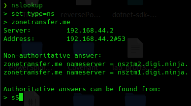
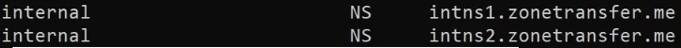

DNSrecoon y transferencia de zona
Anteriormente veíamos como consultar datos de forma pasiva sobre diferentes dominios.
Estas consultas se realizaban en medida al fichero de zona de estos DNS servers pero no eran el fichero como tal.
Vamos ver como poder descargar ese fichero de zona en un DNS server mal configurado.
- →
→ Transferencia de zona:
Es una capacidad que nos proporcionan los DNS server para copiar ese fichero de zona a otro DNS server y no tener que volver a crearlo.
Esto a veces está mal configurado y nos permite realizar esta transferencia de zona a un DNS server no autorizado.
Vamos a utilizar un dominio de pruebas para ver ese fichero de zonas.
Buscamos “zonetransfer.me”
Vemos alguna información pero vamos a ver como con el fichero tendremos mucha más información.
Existen algunas herramientas de terminal que permiten sacar información como DNS dumpster.
sudo apt install dnsutils
Hay varias herramientas como por ejemplo:
nslookup
set type=ns
zonetransfer.me

Podemos comprobar si nos envía el fichero de transferencia de zona:
set type=any
ls -d zonetransfer.me

Dice que el comando no está implementado por que realmente le estamos pidiendo que transfiera este archivo a una máquina host Kali Linux y esto no tendría sentido por motivos de seguridad.
Esto mismo podemos intentarlo desde una máquina windows y nos saldrá el mismo error,
Esto es por el mismo motivo que antes, estamos intentando iniciar una transferencia del fichero hacia ningún sitio porque el host o destino de la transferencia debería ser o está entendido para el DNS server que debe de ser otro DNS server y no cualquier máquina que le haga la petición.
set type=any
server nsztml.digi.ninja
ls -d zonetransfer.me
Una de las cosas interesantes de estos ficheros de zona es que en muchas ocasiones, cuando ese DNS server está compartido entre la red interna y redes externas, podemos también tener algún tipo de configuración de servidores y direcciones internas.

Otra herramienta en Linux DNSrecon:
dnsrecon -d zonetrasfer.me -t axfr